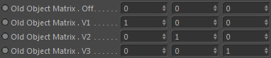

Inports
Dynamics/Navié Scene
Link here the fluid dynamics node or an Effex Scene node (which contains a fluid dynamics node) that contains the velocity for advection.
Old Physical Position (Global)
The position to advect given in physical space. Use the Space Converter node if you have the position in a different coordinate space.
Old Object Matrix

An object matrix to advect.